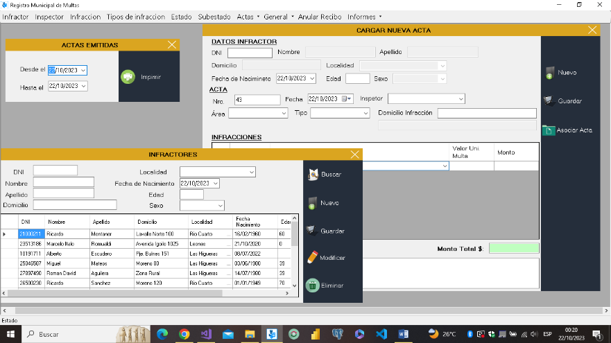

Nuestros Productos

Registro de Faltas Municipal - RegistroFaltasPro
RegistroFaltasPro ha sido diseñado como una herramienta integral...
Más informaciónBolilleroDigital: Adjudicación Transparente de Viviendas y Lotes
BolilleroDigital se erige como un sistema informático de vanguardia...
Más información
Desarrollo de un Sistema Integral para Corralones Municipales
Nos complace informar que actualmente nos encontramos inmersos en el desarrollo...
Más informaciónPlataforma Online para Consulta del Padrón Electoral
Nos complace presentar nuestra plataforma web diseñada con el propósito de ofrecer...
Más información